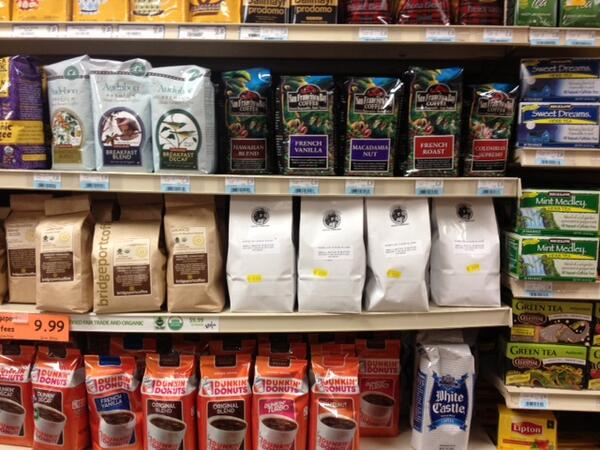

The process of actually finding nice coffee can be very indimidating. There are many factors that go into how good a coffee is, but there are a few specific ones to look out for that will make finding the best coffee easy.
You definitely want freshly roasted beans. Most coffee at the supermarket will have a best by date on the bag, but you want to look for a roasted on date instead. This will tell you exactly how long its been since that coffee has been roasted which is much more useful than a vauge best by date. The ideal time to use coffee beans is 1-3 weeks after they've been roasted. You can still use the beans outside of those dates, but they won't be in their prime.
Another major thing to look out for is that you buy whole beans and grind them right before brewing your coffee. Coffee starts losing its flavor immediately after its been ground meaning if you buy ground coffee, you'll always have a stale cup. Another advantage to grinding your own coffee is that you can change the ground size to work better for however you make coffee.
The main flavor components and mouthfeel of coffee are mostly dependent on the coffee's roast and where it was grown, but can also vary based on the Brewing Method. Knowing what flavors you prefer and how to achieve those flavors through choosing specific roasts and origins can help you always buy a coffee that you'll enjoy.
There are 3 main types of roasts, with more specific subtypes for each of them. Light, medium, and dark roasts all completely change the taste and mouthfeel of the coffee. Light roasts are bright and acidic and retain alot of the flavor of whatever coffee was roasted. It has a thinner texture, resulting in a lighter mouthfeel. Medium roast coffees have some acidity and original flavor from the coffee, but the flavor of the roast comes through a little more. The mouthfeel is smooth, but not syrupy. Dark roasts lose most of the flavor of the original coffee and the flavor of the roast comes through heavily. The mouthfeel can be described as heavy and almost creamy.
While there are hundreds if not thousands of individual coffee origins, they can all be organized geograhpically into 3 categories: American, African, and Asian coffees. American coffee has a very balanced flavor, it's not too acidic or sweet and has nutty and spicy qualities. African coffee is very bright and is the most acidic out of the 3. There are often fruity and citrusy flavors in African Coffees. Asian coffee is the sweetest and has earthy, choclaty flavors.
Along with different coffee origins, there is also the difference between single origin and blended coffees. Single origin uses beans that come from a single region or producer, while blends are a mixture of multiple origin beans. There are pros and cons to both of them and which one you prefer comes down to personal preference. Single origin tends to be more expensive and can only be produced during a certain season. Blended Coffee is often cheaper than single origin and can be produced year round, since its a mix of multiple beans. As far as taste goes, some people prefer experiencing 1 specific taste that you get from a single origin, while others prefer the more flavorful coffee that a blend would produce.